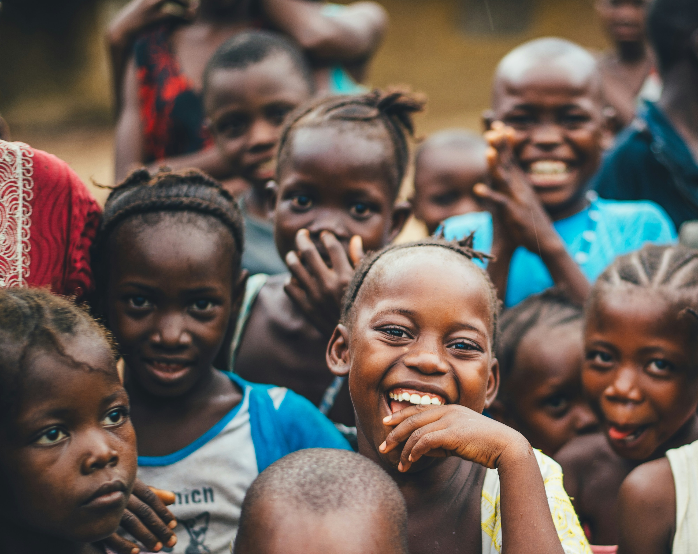

-

-

-

-

Just like a tree grows from a tiny seed, meaningful change begins with a single action. Voluntree helps you plant the seeds of kindness by connecting you with volunteering opportunities that matter. Discover your purpose, nurture your passion, and let your positive impact grow.

VolunTree is a platform dedicated to connecting individuals with volunteer opportunities in their communities. Our mission is to foster a culture of giving and social responsibility by making it easy for people to find and engage in meaningful volunteer work.
Take a look at some of our featured volunteer events. Your next meaningful experience might be just one click away.